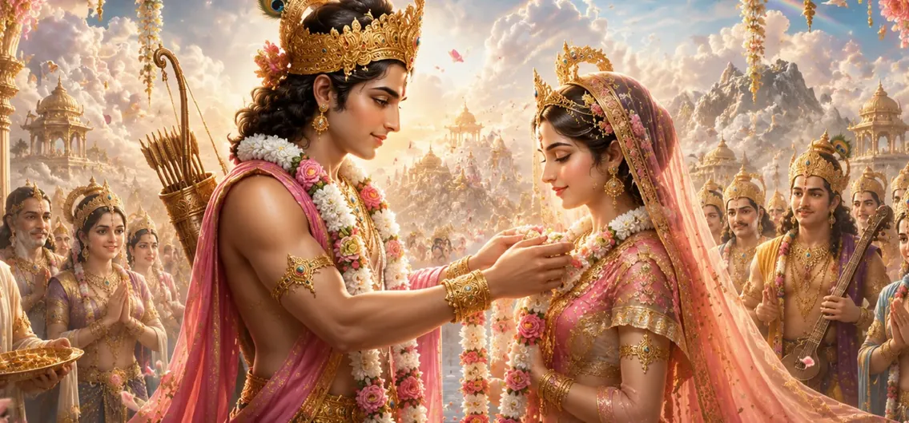

After the extraordinary events that transformed Kāma’s destiny, the story turns toward one of the most significant moments in his divine journey—his sacred marriage. This union was not merely a worldly celebration but an event woven into the cosmic order established by the gods. Through this marriage, the forces of love, beauty, affection, and harmony found a divine expression that would influence the lives of gods, sages, and human beings alike.
The marriage of Kāma reveals that love is not merely an emotion but a sacred force created by the Divine for the continuity and harmony of creation. The chapter illustrates how affection, companionship, and mutual devotion can become instruments of spiritual growth when guided by righteousness and divine purpose. Through Kāma’s marriage, the Shiva Purana presents a deeper understanding of the role that love plays within the universal design of existence.
The gods understood that Kāma's role in creation was essential. Love and attraction were not merely personal emotions but sacred forces that sustained life, family, and society. Therefore, the divine beings desired that Kāma should enter into a blessed union that would strengthen his purpose and ensure the continuation of his sacred influence throughout the worlds.
Among the celestial beings, Rati was renowned for her beauty, grace, and unwavering devotion. She embodied affection, loyalty, and purity of heart. Her virtues made her the perfect companion for Kāma, for together they represented the harmonious union of love and devotion. The gods regarded their coming marriage as a divine and auspicious event.
When the sacred marriage ceremony was arranged, the heavens rejoiced. Divine music echoed through the celestial realms, flowers showered from above, and the gods gathered to witness the auspicious union. The event symbolized the blessing of harmony, companionship, and the sacred bond that supports the continuity of creation.
Following their marriage, Kāma and Rati became inseparable companions. Their union was founded upon mutual respect, affection, and divine purpose. Together they carried out the sacred responsibilities entrusted to them by the gods, inspiring love and harmony throughout creation while remaining devoted to the cosmic order established by the Divine.
True love becomes sacred when it serves a higher purpose and promotes harmony.
A strong relationship is built upon respect, loyalty, and shared spiritual values.
The union of Kāma and Rati symbolizes balance between affection, beauty, and righteousness.
The marriage of Kāma and Rati brought joy not only to the heavens but also to all the worlds. The gods celebrated, sages offered blessings, and celestial beings rejoiced. Their union symbolized the flourishing of life and the continuation of divine order throughout creation.
After his marriage, Kāma devoted himself fully to the responsibility entrusted to him by the gods. He inspired affection among living beings and encouraged the bonds that sustain families and societies. Through his actions, creation continued to flourish under the guidance of divine will.
Rati was more than the wife of Kāma; she became an example of unwavering devotion and loyalty. Her love was rooted in faith and sacrifice, qualities that elevated their relationship beyond ordinary affection. She remained a source of strength and inspiration throughout Kāma’s divine journey.
The sacred marriage of Kāma and Rati became a timeless symbol of love, companionship, and mutual devotion. Their story reminds devotees that when affection is guided by righteousness and divine purpose, it becomes a force that nurtures harmony and contributes to the welfare of the entire world.
The marriage of Kāma and Rati teaches that true love is far more than attraction or desire. When guided by righteousness, devotion, and divine purpose, love becomes a sacred force that nurtures harmony and supports the unfolding of God's plan. Their union reminds us that relationships flourish when built upon respect, faith, sacrifice, and a shared commitment to higher ideals.
The Shiva Purana presents marriage not merely as a social institution but as a sacred partnership blessed by the Divine. Through the union of Kāma and Rati, the scripture emphasizes that marriage is a path through which individuals can support one another, fulfill righteous duties, and contribute to the harmony of creation. Their relationship became an example of how love can be elevated into a spiritual discipline when rooted in devotion and virtue.
With the sacred marriage complete, the story moves toward new divine events that will shape the destiny of gods and mortals alike. The influence of Kāma and Rati would continue to play an important role in the unfolding cosmic drama. As future chapters reveal, the forces of love, devotion, and destiny would become deeply connected with the great events surrounding Lord Shiva and Goddess Sati.
"Love becomes eternal when it is guided by devotion, strengthened by virtue, and blessed by the Divine."
The sacred marriage of Kāma and Rati reveals the divine purpose behind love, companionship, and devotion. Continue to the next chapter to discover the fascinating story of Sandhyā, whose life and spiritual journey become an important part of the unfolding narrative of the Shiva Purana.